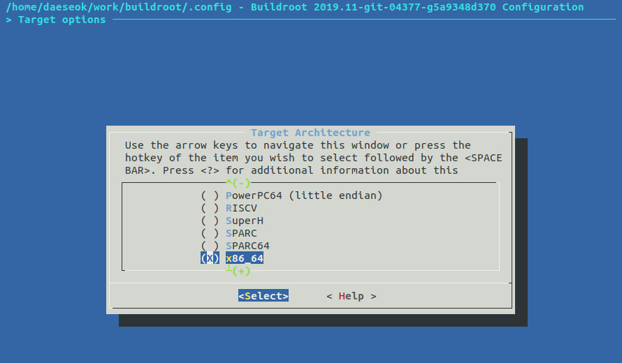
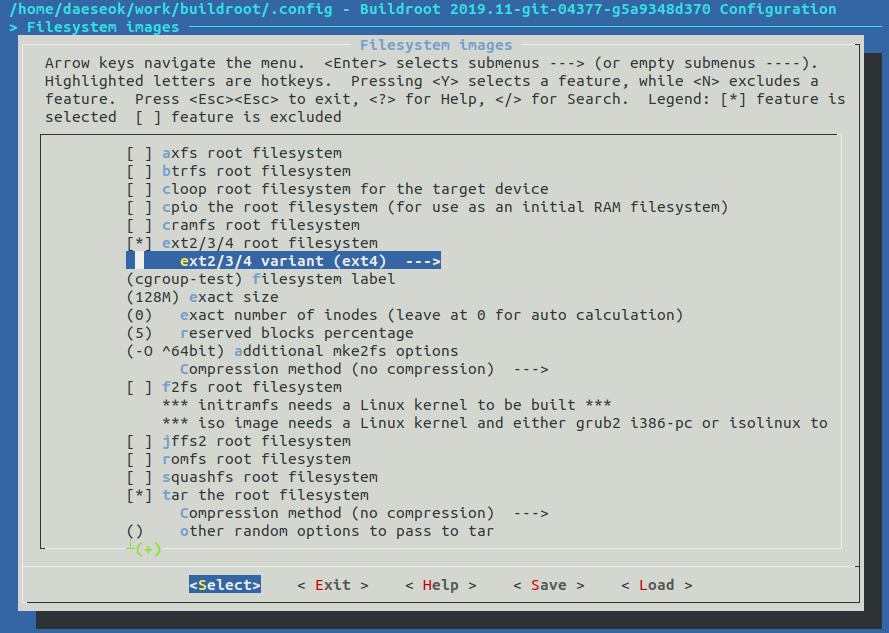
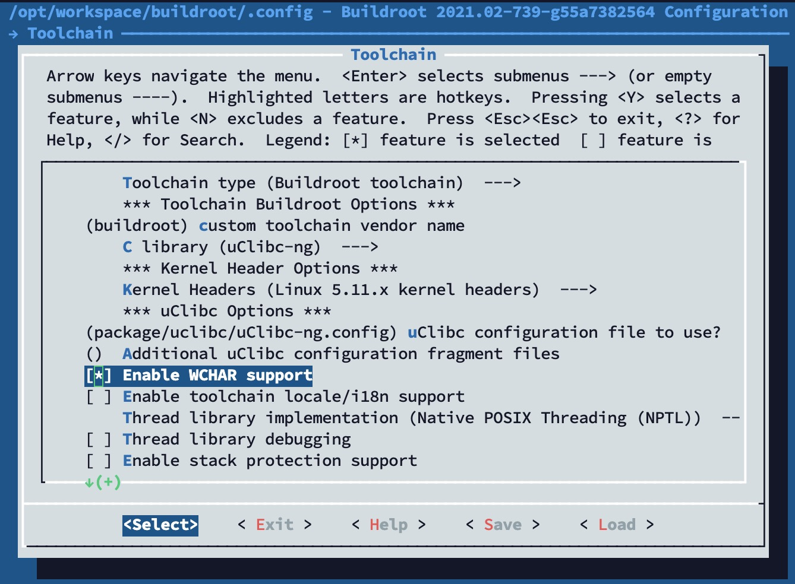
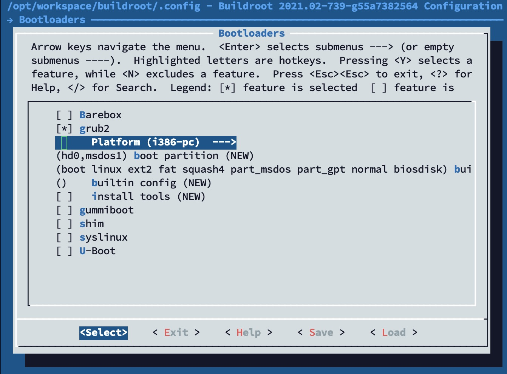

$ WORKSPACE=/opt/workspace/
$ cd $WORKSPACE
$ git clone https://github.com/rhboot/grub2在这个章节你将学会如何使用Busybox和grub制作一个可启动的系统。这个章节基于qemu模拟器，通过这个章节可以得到一个可运行的镜像，这个镜像使用bios提供的功能完成内核的引导工作。
首先我们需要编译一个自己的GRUB。
需要注意的是grub的安装可能会毁坏你的系统，如果对其不是很了解以下的例子建议在虚拟机中运行，不要在真实的物理机上运行。
编译GRUB
下载源码，这里使用了Red Hat提供的源码库
进行配置
$ ./bootstrap
$ ./configure --prefix=$WORKSPACE/grub-bios HOST_CFLAGS='-g'这里使用 HOST_CFLAGS 选项增加了 -g ，主要是为了增加调试信息，可以帮助我们调试grub中提供的一些工具。然后就可以开始编译并进行安装
$ make
$ make install这样我们自己编译的GRUB版本就被安装在了 $WORKSPACE/grub-bios 目录中了。
编译Busybox
在之前的文章也提及过Busybox，它可以提供一个最基本的运行环境，使用它可以帮助我们建立一个最简单的Linux系统。在这里仍然使用Busybox作为基础的运行环境。这里我们只使用Busybox提供的 rootfs 。
首先和GRUB一样，下载源码
$ cd $WORKSPACE
$ git clone git://git.buildroot.net/buildrootbuildroot也提供了文本式的GUI配置界面
$ make menuconfig和之前配置内核一样进行配置，通过"Target Options" → "Target Architecture"选择x86_64架构

在这里文件系统我们通过路径"Filesystem images" → "ext2/3/4 root file system"选择ext兼容的文件系统。选择ext4文件系统。

还需要打开"Toolchain" → "Enable WCHAR support"

和"Bootloaders" → "grub2"

然后就可以开始编译了
$ make -j8
....
ln -sf rootfs.ext2 /opt/workspace/buildroot/output/images/rootfs.ext4
>>> Generating filesystem image rootfs.tar
mkdir -p /opt/workspace/buildroot/output/images
rm -rf /opt/workspace/buildroot/output/build/buildroot-fs/tar
mkdir -p /opt/workspace/buildroot/output/build/buildroot-fs/tar
rsync -auH --exclude=/THIS_IS_NOT_YOUR_ROOT_FILESYSTEM /opt/workspace/buildroot/output/target/ /opt/workspace/buildroot/output/build/buildroot-fs/tar/target
echo '#!/bin/sh' > /opt/workspace/buildroot/output/build/buildroot-fs/tar/fakeroot
echo "set -e" >> /opt/workspace/buildroot/output/build/buildroot-fs/tar/fakeroot
echo "chown -h -R 0:0 /opt/workspace/buildroot/output/build/buildroot-fs/tar/target" >> /opt/workspace/buildroot/output/build/buildroot-fs/tar/fakeroot
PATH="/opt/workspace/buildroot/output/host/bin:/opt/workspace/buildroot/output/host/sbin:/usr/local/sbin:/usr/local/bin:/usr/sbin:/usr/bin:/sbin:/bin:/usr/games:/usr/local/games:/snap/bin" /opt/workspace/buildroot/support/scripts/mkusers /opt/workspace/buildroot/output/build/buildroot-fs/full_users_table.txt /opt/workspace/buildroot/output/build/buildroot-fs/tar/target >> /opt/workspace/buildroot/output/build/buildroot-fs/tar/fakeroot
echo "/opt/workspace/buildroot/output/host/bin/makedevs -d /opt/workspace/buildroot/output/build/buildroot-fs/full_devices_table.txt /opt/workspace/buildroot/output/build/buildroot-fs/tar/target" >> /opt/workspace/buildroot/output/build/buildroot-fs/tar/fakeroot
printf ' \n' >> /opt/workspace/buildroot/output/build/buildroot-fs/tar/fakeroot
printf ' \n' >> /opt/workspace/buildroot/output/build/buildroot-fs/tar/fakeroot
printf ' (cd /opt/workspace/buildroot/output/build/buildroot-fs/tar/target; find -print0 | LC_ALL=C sort -z | tar --pax-option=exthdr.name=%%d/PaxHeaders/%%f,atime:=0,ctime:=0 -cf /opt/workspace/buildroot/output/images/rootfs.tar --null --xattrs-include='\''*'\'' --no-recursion -T - --numeric-owner)\n' >> /opt/workspace/buildroot/output/build/buildroot-fs/tar/fakeroot
chmod a+x /opt/workspace/buildroot/output/build/buildroot-fs/tar/fakeroot
PATH="/opt/workspace/buildroot/output/host/bin:/opt/workspace/buildroot/output/host/sbin:/usr/local/sbin:/usr/local/bin:/usr/sbin:/usr/bin:/sbin:/bin:/usr/games:/usr/local/games:/snap/bin" FAKEROOTDONTTRYCHOWN=1 /opt/workspace/buildroot/output/host/bin/fakeroot -- /opt/workspace/buildroot/output/build/buildroot-fs/tar/fakeroot
rootdir=/opt/workspace/buildroot/output/build/buildroot-fs/tar/target
table='/opt/workspace/buildroot/output/build/buildroot-fs/full_devices_table.txt'
ln -snf /opt/workspace/buildroot/output/host/x86_64-buildroot-linux-uclibc/sysroot /opt/workspace/buildroot/output/staging
....执行完后，将会在buildroot/output/images/目录中得到rootfs.ext4文件，这个文件我们将作为制作镜像的根文件系统。
制作基于BIOS启动的磁盘镜像
现在，已经编译好了用于引导的GRUB和提供根文件的Busybox。下面进入正题，如何制作基于BIOS启动的磁盘镜像？
首先，我们先制作一个磁盘镜像，使用dd创建一个32M的磁盘镜像。
$ dd if=/dev/zero of=bios-disk.img bs=1M count=32然后，创建一个MBR格式的分区磁盘
$ fdisk bios-disk.img
Welcome to fdisk (util-linux 2.34).
Changes will remain in memory only, until you decide to write them.
Be careful before using the write command.
Device does not contain a recognized partition table.
Created a new DOS disklabel with disk identifier 0x4c2e4f40.
Command (m for help): o
Created a new DOS disklabel with disk identifier 0xea983b17.
Command (m for help): n
Partition type
p primary (0 primary, 0 extended, 4 free)
e extended (container for logical partitions)
Select (default p): p
Partition number (1-4, default 1):
First sector (2048-65535, default 2048):
Last sector, +/-sectors or +/-size{K,M,G,T,P} (2048-65535, default 65535):
Created a new partition 1 of type 'Linux' and of size 31 MiB.
Command (m for help): w
The partition table has been altered.
Syncing disks.这里，只创建了一个分区，这个分区Linux类型的磁盘分区。我们还需要将这个磁盘分区进行格式化，这里使用了ext4类型的文件系统。
$ LOOPDEV=$(sudo losetup --find --show bios-disk.img)
$ sudo partprobe ${LOOPDEV}
$ sudo mkfs.ext4 -F -L "root" ${LOOPDEV}p1这里我们使用回环设备挂载磁盘镜像，并且使用 mkfs.ext4 格式化磁盘分区。
$ MOUNTDIR=$(mktemp -d -t workXXXXXX)
$ sudo mount ${LOOPDEV}p1 $MOUNTDIR
$ sudo tar -C $MOUNTDIR -xf $WORKSPACE/buildroot/output/images/rootfs.tar这段shell使用了busybox提供的rootfs.tar，并将其解压到磁盘镜像中。至此，我们基本完成了基础磁盘的制作，最后还需要将grub安装到MBR分区格式的磁盘中。
$ sudo $WORKSPACE/grub-bios/sbin/grub-install --boot-directory=$MOUNTDIR/boot --modules="part_msdos" $LOOPDEV安装内核到磁盘镜像
我们已经得到一个可以使用GRUB启动的磁盘镜像，这个磁盘镜像通过使用GRUB进行引导内核。同时还需要将内核负责安装到磁盘镜像才能顺利的启动系统。这里我们将使用内核编译的bzImage作为内核镜像，并且将其配置到GRUB的配置文件中。
在上个章节我们将rootfs.tar解压到磁盘中，busybox默认将grub相关的文件安装到了 /boot/grub 中。我们可以看到busybox提供的默认 grub.cfg 配置文件。
set default="0"
set timeout="5"
menuentry "Buildroot" {
linux /boot/bzImage root=/dev/sda1 rootwait console=tty1
}在这个配置中，grub将会将位于/boot/bzImage的linux内核镜像进行引导启动，并且设置根文件为/dev/sda1，这个表明是第一块硬盘的第一个分区。和我们上述步骤设置的是一致的。
$ sudo cp /opt/linux/arch/x86_64/boot/bzImage $MOUNTDIR/boot/最后做一下清理工作，将回环设备归还给系统
$ sudo umount $MOUNTDIR
$ sudo partx -d $LOOPDEV
$ sudo losetup -d $LOOPDEV运行
已经制作了基于BIOS系统的系统镜像，接着，让我们在qemu中运行吧
$ qemu-system-x86_64 -m 512 -drive file=bios-disk.img,format=raw不出意外，我们将进入grub的菜单选项

最终，系统将正常启动

总结
通过这篇文章可以学会使用grub和busybox制作一个简单的可启动的磁盘镜像，那么在这个过程中，发生了什么？BIOS如何把控制权限交给了GRUB？以及GRUB又是如何加载Linux内核的呢？下一章节我们将会详细的描述基于BIOS的GRUB启动过程。